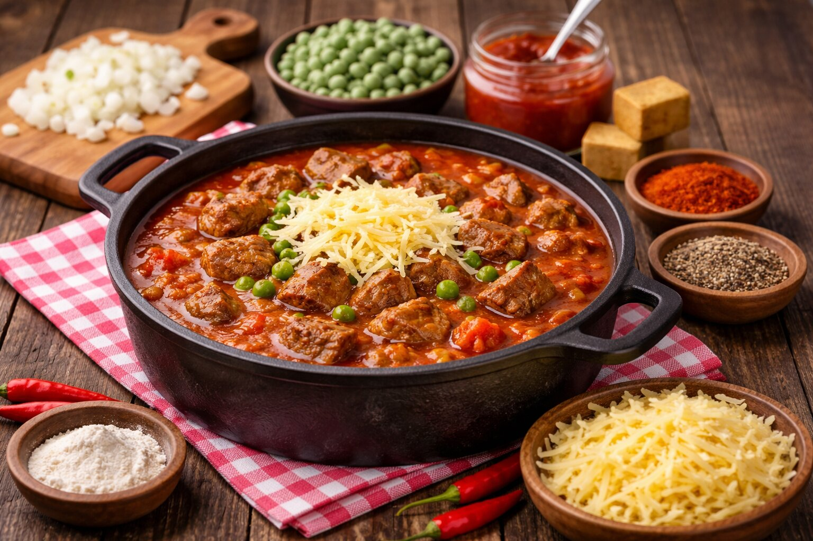

Suroviny
- 1000 g hovädzieho mäsa
- 2 ks cibule
- Masox podľa chuti
- Soľ, mleté čierne korenie
- 1 PL vegety
- 1 PL hladkej múky
- 2 PL mletej sladkej červenej papriky
- 2 PL pálivej mletej papriky
- 78 g paradajkového pretlaku
- 200 g hrášku (mrazeného alebo čerstvého)
- 100 g tvrdého syra na strúhanie
Postup
- Hovädzie mäso umyjeme a pokrájame na kocky.
- Cibuľu očistíme, nakrájame nahrubo a orestujeme ju do zlatista.
- Pridáme mäso, osolíme, okoreníme a spolu orestujeme.
- Pridáme paradajkový pretlak, sladkú a pálivú papriku, masox, podlejeme vodou a dusíme do mäkka.
- Do hotového gulášu pridáme hrášok.
- Zahustíme múkou rozmiešanou v malom množstve studenej vody a povaríme asi 10 minút.
- Podľa potreby dochutíme soľou a vegetou.
- Podávame s ryžou, posypané strúhaným syrom.